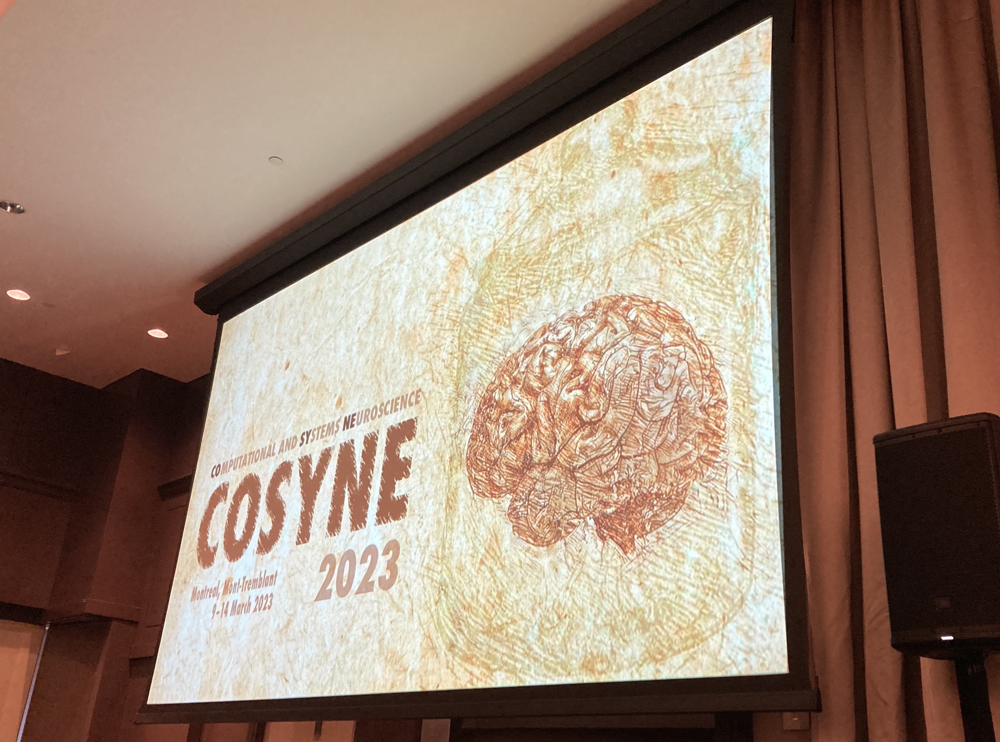
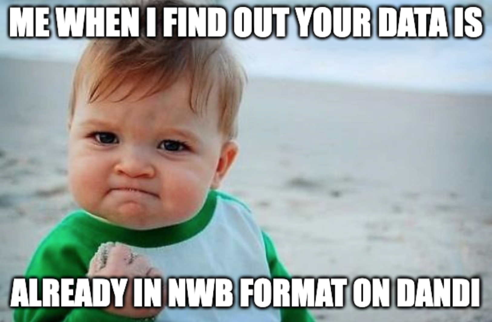
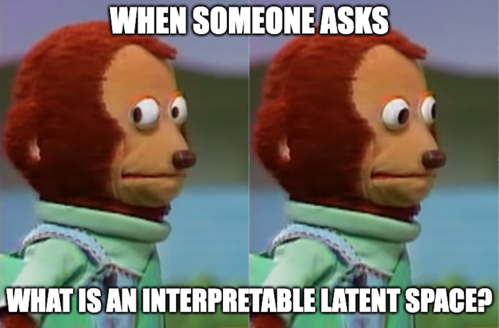

Trends | Cosyne 2023
March 2023

Trends here, trends there, trends everywhere! Cosyne 2023 was packed full of superb science, and because drinking straight from a firehose for six straight days is impractical 😅 I'm going distill everything we just witnessed into a few key themes 🤓
Before I dive in, let me explain what this blog post aims to do. This blog post does NOT explain what happened at Cosyne 2023. If you want to see what happened go to: Resources | Cosyne 2023. This post IS about clarifying the trends that transcend model animal, experiment vs. computation, and so many more of our field's dichotomies. These thoughts are my attempt at synthesizing not only where we currently stand as a field and community, but also where we hope to go.
When I started this endeavor of identifying trends I wanted to see all the talk titles together. No authors. No institutions. Just titles. I wanted to envision what all of the organizers wanted us to get out of Cosyne 2023. So, I did just that. Before reading this post, I challenge you to look at my list and see what trends you generate!
With that backdrop, let's get started!! I identified six 😱 trends; they are:
One of the trends I was happiest to see at Cosyne 2023 was open data. The "open data" trend was not only reflected in the choice of tutorials, but also in the poster sessions which was surprising but heartwarming!
Both the NWB x Dandi tutorial as well as the International Brain Lab tutorial focused heavily on sharing uniformily formatted data to maximize reuse and scientific impact. Especially when thinking about all the work that goes into generating this data, it's fantastic that we're teaching everyone in the community to use these huge quantities of valuable data.
I was also suprised to see this trend hit so strongly at the poster sessions, here are two examples among many.
Open data was heavily discussed at Cosyne 2023 for several reasons including: (1) labs are collecting huge amounts of data that extend far beyond what they can study by themselves, (2) we are often collecting multiple datastreams (neural, naturalisitic video, task conditions, etc.) and jointly analyzing this multimodal data is often outside the scope of a single research group, and (3) the rise of machine learning in the computational and systems neuroscience fields means that there are researchers who want to build tools for scientists but need data.
I'm ecstatic that this was such a strong Cosyne 2023 trend, and I can't wait to see what it blossoms into next year 🌸🧠
If you were at Cosyne 2023, for even 5 minutes, you probably heard about interpretable latent spaces. Srdjan Ostojic, during his talk on the last day of the main meeting dubbed interpretable the keyword of cosyne 2023, and I cannot think of a more apt statement.
We saw this emerge in talks, posters, workshops at many different levels of abstraction. To make this more concrete I want to look at two workshop titles from the first day: (1) "Are neurons interpretable? Disentangled representations and modularity in biological and artificial brains", and (2) "Taming Complexity: Discovering Interpretable Latent Spaces in Human Brains & Behaviors". These themes are worlds apart. One probes the individual neuron level and the other reflects on a systems neuroscience and behavior level, yet both are seeking to clarify "interpretable". Part of the difficulty with the terms "interpretable", "latent space", and "interpretable latent spaces" are that they are incredibly loaded and carry different weight dependent upon your sub-community within computational & systems neuroscience. It is unclear when we will collectively be able to share a definition across all levels of abstraction.
That being said, during the Taming Complexity (talk recordings here) panel the panelists seemed to make headway and at least could be caught simultaneously smiling. Perhaps there is hope for consensus!
That wraps up our short 🍭sweet dive into my Cosyne 2023 trends! To recap, we outlined ✦ Open Data ✦ Interpretable Latent Spaces ✦ Geometry / Topology ✦ Reinforcement Learning ✦ Multidimesional Time Scale Modeling ✦ Contrastive Learning vs Generative Models ✦ and dove into the first two. I hope you learned something 🤓 and I will see you next time!
Before I dive in, let me explain what this blog post aims to do. This blog post does NOT explain what happened at Cosyne 2023. If you want to see what happened go to: Resources | Cosyne 2023. This post IS about clarifying the trends that transcend model animal, experiment vs. computation, and so many more of our field's dichotomies. These thoughts are my attempt at synthesizing not only where we currently stand as a field and community, but also where we hope to go.
When I started this endeavor of identifying trends I wanted to see all the talk titles together. No authors. No institutions. Just titles. I wanted to envision what all of the organizers wanted us to get out of Cosyne 2023. So, I did just that. Before reading this post, I challenge you to look at my list and see what trends you generate!
With that backdrop, let's get started!! I identified six 😱 trends; they are:
-
✦ Open Data
✦ Interpretable Latent Spaces
✦ Geometry / Topology
✦ Reinforcement Learning
✦ Multidimesional Time Scale Modeling
✦ Contrastive Learning vs Generative Models (Borrowing from Memming Park)
1 - Open Data

One of the trends I was happiest to see at Cosyne 2023 was open data. The "open data" trend was not only reflected in the choice of tutorials, but also in the poster sessions which was surprising but heartwarming!
Both the NWB x Dandi tutorial as well as the International Brain Lab tutorial focused heavily on sharing uniformily formatted data to maximize reuse and scientific impact. Especially when thinking about all the work that goes into generating this data, it's fantastic that we're teaching everyone in the community to use these huge quantities of valuable data.
 From Ryan Ly and Cody Baker
From Ryan Ly and Cody Baker
 From Ryan Ly and Cody Baker
From Ryan Ly and Cody Baker
 From Colleen Gillon
From Colleen Gillon
 From Alexandra Keinath
From Alexandra Keinath
I'm ecstatic that this was such a strong Cosyne 2023 trend, and I can't wait to see what it blossoms into next year 🌸🧠
2 - Interpretable Latent Spaces

We saw this emerge in talks, posters, workshops at many different levels of abstraction. To make this more concrete I want to look at two workshop titles from the first day: (1) "Are neurons interpretable? Disentangled representations and modularity in biological and artificial brains", and (2) "Taming Complexity: Discovering Interpretable Latent Spaces in Human Brains & Behaviors". These themes are worlds apart. One probes the individual neuron level and the other reflects on a systems neuroscience and behavior level, yet both are seeking to clarify "interpretable". Part of the difficulty with the terms "interpretable", "latent space", and "interpretable latent spaces" are that they are incredibly loaded and carry different weight dependent upon your sub-community within computational & systems neuroscience. It is unclear when we will collectively be able to share a definition across all levels of abstraction.
That being said, during the Taming Complexity (talk recordings here) panel the panelists seemed to make headway and at least could be caught simultaneously smiling. Perhaps there is hope for consensus!

That wraps up our short 🍭sweet dive into my Cosyne 2023 trends! To recap, we outlined ✦ Open Data ✦ Interpretable Latent Spaces ✦ Geometry / Topology ✦ Reinforcement Learning ✦ Multidimesional Time Scale Modeling ✦ Contrastive Learning vs Generative Models ✦ and dove into the first two. I hope you learned something 🤓 and I will see you next time!